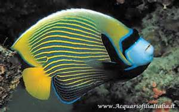

Il pesce angelo
La famiglia dei pesci angelo comprende moltissimi pesci dalle forme e colori più diversi e sgargianti e singolari.
Il loro corpo tende ad essere alto, compresso ai fianchi, di forma romboidale. Le pinne dorsale e anale sono opposte e solitamente speculari, ad esclusione di alcuni raggi allungati al termine di quella dorsale. L'opercolo branchiale è provvisto di spina nella parte inferiore, da qui il nome scientifico Pomacanthus dove Poma in greco è opercolo e acanth-spina.
il nome comune dei pesci di questa famiglia si ispira alla forma e alle livree che presentano: le pinne tendono ad essere tanto lunghe, e il mantello è tanto vario da poter ricordare angeli; per gli stessi motivi gli appartenenti a questa famiglia, soprattutto se di specie di dimensioni ridotte sono detti anche pesci farfalla